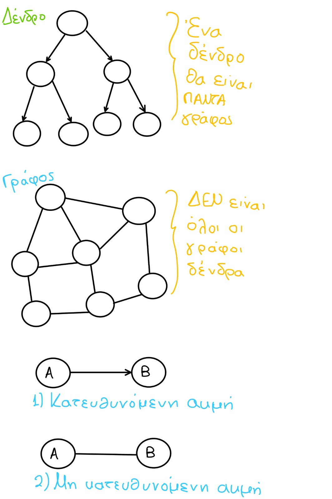

Ένας γράφος (graph) είναι μία δομή που αποτελείται από ένα σύνολο κόμβων (ή σημείων ή κορυφών) και ένα σύνολο γραμμών (ή ακμών ή τόξων) που ενώνουν μερικούς ή όλους τους κόμβους. Ο γράφος αποτελεί την πιο γενική δομή δεδομένων, με την έννοια ότι όλες οι προηγούμενες δομές που παρουσιάστηκαν μπορούν να θεωρηθούν περιπτώσεις γράφων.
Εάν όλες οι ακμές σε έναν γράφο έχουν κατεύθυνση, ο γράφος ονομάζεται κατευθυνόμενος γράφος (directed graph).
Εάν όλες οι ακμές σε έναν γράφο δεν έχουν κατεύθυνση, ο γράφος ονομάζεται μη κατευθυνόμενος γράφος (undirected graph).
| Χαρακτηριστικά | Γράφοι | Δένδρα |
|---|---|---|
| Αποκλειστικά μονόδρομες συνδέσεις | ΟΧΙ | ΝΑΙ |
| Ύπαρξη βρόχων ή κυκλικών δεσμών | ΝΑΙ | ΟΧΙ |